112 年國中教育會考自然試題與答案
這一頁是民國 112 年國中教育會考自然的整份歷屆試題，共 50 題，題目與標準答案出自心測中心 會考歷屆試題（依著作權法 §9，考試試題不受著作權保護），其中 50 題附有詳解。以下逐題列出題幹、選項與答案；要計時作答或記錄成績，請用線上練習。
線上作答這一科 →
全部 50 題
第 1 題
若將某區域的原始森林育林成種植單一物種的樹林時，則此區域最可能出現下列何種變化？
- （A）生產者的物種數增加
- （B）消費者的物種數增加
- （C）食物網變得比較複雜
- （D）生態系變得比較不穩定
答案：（D）
詳解與考點
正解：原始森林改種單一物種後，生產者種類減少，依賴其食物與棲地的消費者種類也容易減少，食物網因而簡化。食物網越單一，任一物種數量波動越容易造成連鎖影響，所以生態系會變得比較不穩定，D為正解。
A：改種單一物種會使生產者的物種數減少，不會增加，錯誤。
B：食物來源與棲地的多樣性下降，消費者物種數不會增加，錯誤。
C：物種減少會使食物網變得較簡單，不是較複雜。它看起來對，是因為樹木可能長得整齊，但外觀整齊不等於生態關係複雜，錯誤。
本題考點：生物多樣性與穩定性——物種多、食物網複雜的生態系較能分散擾動；改為單一物種會降低生產者與消費者多樣性；食物網簡化時生態系穩定性降低。
第 2 題
在太魯閣地區常見到岩層或岩石受力而彎曲成美麗圖案，如圖(一)所示。這種彎曲的現象稱為下列何者？
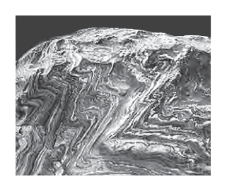
- （A）斷層
- （B）褶皺
- （C）順向坡
- （D）逆向坡
答案：（B）
詳解與考點
正解：題幹描述岩層受力後仍連續、彎曲成圖案，這是褶皺的判準；岩層未斷裂而彎曲變形成波浪狀構造，稱為褶皺，故B為正解。
A：斷層是岩層沿破裂面發生相對位移，特徵是斷開錯位，不是連續彎曲，錯誤。
C：順向坡描述岩層傾斜方向與坡面的關係，屬坡地分類，不是岩層彎曲的構造名稱，錯誤。
D：逆向坡同樣是坡地分類，不是岩層彎曲的構造名稱，錯誤。
本題考點：地質構造辨識——岩層受力後未斷裂而彎曲為褶皺；斷層與褶皺的判準——有破裂位移為斷層，連續彎曲則為褶皺。
第 3 題
圖(二)為自製運動飲料的成分說明圖，圖中X 所指應為下列何類物質？

- （A）醣類
- （B）有機酸
- （C）蛋白質
- （D）電解質
答案：（D）
詳解與考點
正解：圖中 X 指向「補充流失的鈉和鉀離子」，材料又是少量鹽，關鍵是鈉、鉀在水中以離子形式存在。能解離成離子並導電的物質屬於電解質，運動流汗流失鈉、鉀後可加以補充，所以 D 為正解。
A：醣類主要提供能量，對應的是圖中的鮮榨果汁，不是補充鈉、鉀離子。
B：有機酸不是鈉、鉀離子的類別；鹽在水中解離的是離子。
C：蛋白質主要用於構成與修補身體組織，非運動飲料補充鈉、鉀的重點。
本題考點：電解質——溶於水後能形成可移動離子並導電的物質；成分功能配對——看到鈉、鉀等離子時判為電解質，看到果汁等醣類時判為能量來源。
第 4 題
豆腐乳為一種傳統發酵食品，其一做法是將豆腐接種毛黴菌以進行發酵，當豆腐被菌絲完全覆蓋後，再加入調味料而製成。下列有關毛黴菌構造的敘述，何者最合理？
- （A）不具孢子
- （B）不具粒線體
- （C）不具葉綠體
- （D）不具細胞壁
答案：（C）
詳解與考點
正解：題幹的毛黴菌用菌絲覆蓋豆腐並進行發酵，觸發真菌的細胞構造判斷。毛黴菌屬真菌界，是真核生物，雖有細胞壁、粒線體與孢子，卻不行光合作用，因此不具葉綠體，故 C 為正解。
A：毛黴菌可藉孢子繁殖，並非不具孢子，錯誤。
B：毛黴菌是真核生物，具有粒線體進行能量轉換，錯誤。
D：真菌具有細胞壁，主要成分為幾丁質，錯誤。
本題考點：真菌構造——真菌有細胞壁、粒線體及孢子；是否具葉綠體的判準——不行光合作用的真菌不具葉綠體。
第 5 題
圖(三)為某港口8/11～8/14的潮汐變化圖，根據圖中資訊判斷，8/11的潮差與8/14的潮差約相差多少公尺？
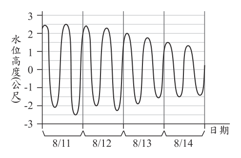
- （A）2
- （B）4
- （C）5
- （D）8
答案：（A）
詳解與考點
正解：題幹要比較兩日潮差，應先各自用最高潮位減最低潮位。由圖（三）讀得8/11最高約＋2.5公尺、最低約－2公尺，潮差＝2.5－（－2）＝4.5公尺；8/14潮差約2.5公尺；兩日潮差相差＝4.5-2.5=2公尺，故A為正解。
B：4公尺不是兩日潮差的差值，可能是把單日水位或不同日期水位錯誤相減，錯誤。
C：5公尺不是由兩日潮差4.5公尺與2.5公尺相減所得，錯誤。
D：8公尺把兩天的最高、最低水位交錯相減，未依同一天的潮差定義計算，錯誤。
本題考點：潮差——同一天最高潮位減最低潮位；曲線讀值——先分別讀出各日的最高與最低，再比較兩日潮差，不能交錯取不同日期的水位。
第 6 題
阿東進行「水溫與加熱時間的關係」實驗，其裝置如圖(四)所示。老師看到實驗裝置後，建議他改善測量水溫的方式，阿東進行下列哪一個改善方式最合適？
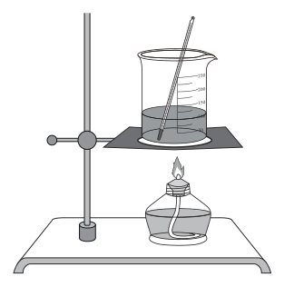
- （A）將溫度計懸吊在水中，不接觸杯底
- （B）調整支架使酒精燈的火焰靠近溫度計
- （C）拿溫度計攪拌杯中的水，使水溫均勻
- （D）將酒精燈的酒精裝滿，使火焰大小固定
答案：（A）
詳解與考點
正解：測量水溫時，溫度計感溫泡應浸在水中但不接觸杯底或杯壁，否則量到受熱容器的溫度而非水溫。圖（四）中溫度計觸及杯底，將溫度計懸吊在水中、不接觸杯底最能改善量測，故A為正解。
B：火焰靠近溫度計會直接加熱玻璃管，使讀數偏高，錯誤。
C：用溫度計攪拌容易撞破，且不是正確的量測改善方式，錯誤。
D：酒精量和是否量到杯底溫度無關，未解決量測誤差，錯誤。
本題考點：液體溫度測量——感溫泡浸入液體中央，不碰杯底與杯壁；實驗改良——改善方式必須直接排除原裝置造成的系統性誤差。
第 7 題
氫氣因燃燒過程不會產生二氧化碳，是能源轉型的目標之一。依據製造方法的不同，可將氫氣分成幾類，其中四類如表(一)所示。在減碳環保的要求下，期望產生的氫氣要盡量是綠氫。表(一) 圖(四) 依據表中資訊，下列說明何者最合理？
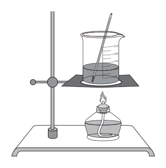
- （A）褐氫和灰氫在製造過程會使用化石燃料，而藍氫和綠氫皆沒有
- （B）將風力發電所產生的電能，用來電解水而產生的氫氣屬於綠氫
- （C）褐氫和灰氫作為燃料，在燃燒過程需要氧氣，而藍氫和綠氫則不用
- （D）氫氣被分成表中的四類顏色，主要是依據製造過程消耗掉的電能多寡來分類
答案：（B）
詳解與考點
正解：表（一）指出綠氫以再生能源電力製造，且過程不產生二氧化碳；風力發電屬再生能源，將其電能用於電解水所得的氫氣符合綠氫定義，故B為正解。
A：藍氫仍以天然氣製造，只是加裝捕捉技術，並非完全不使用化石燃料，錯誤。
C：四類氫氣的差別在製造方式，不影響氫氣燃燒時都需要氧氣的事實，錯誤。
D：顏色分類依製造方式與碳排放，不是依消耗電能多寡，錯誤。
本題考點：各色氫氣——綠氫使用再生能源電力製造，藍氫仍涉及天然氣並搭配碳捕捉；判讀製程時要區分製造階段的碳排與燃燒時氫氣需氧的反應條件。
第 8 題
「若食物中所含的糖分容易被人體快速吸收，則會使血糖急遽上升，而引起某激素分泌增加，進而造成血糖快速下降，甚至形成餐後血糖過低的現象。」根據上述，有關此激素的敘述，下列何者正確？
- （A）是由肝臟分泌的胰島素
- （B）是由肝臟分泌的升糖素
- （C）是由胰島分泌的胰島素
- （D）是由胰島分泌的升糖素
答案：（C）
詳解與考點
正解：題幹描述血糖急遽上升後，某激素分泌增加並使血糖快速下降；這正是胰島素的作用。胰島素由胰臟的胰島分泌，促使細胞攝取葡萄糖，因此 C 為正解。
A：胰島素名稱正確，但分泌部位不是肝臟而是胰島，錯誤。
B：肝臟不是升糖素的分泌部位，且升糖素的主要作用是升高血糖，錯誤。
D：升糖素由胰島分泌，但血糖過低時才會促使其分泌增加，與題幹血糖急升後下降的情境相反，錯誤。
本題考點：血糖調節——血糖升高時，胰島分泌胰島素以降低血糖；血糖過低時，胰島分泌升糖素以升高血糖；須同時辨認激素名稱、分泌部位與作用方向。
第 9 題
舞臺劇演出時，通常會讓周遭的環境昏暗，再用聚光燈來照射演員，讓觀眾能看見演員的表演。有關觀眾能看見演員表演的敘述，下列何者最合理？
- （A）聚光燈發出的光線照射在演員上，演員吸收這些光線，因此觀眾能看見演員
- （B）聚光燈發出的光線照射在演員上，演員折射這些光線，因此觀眾能看見演員
- （C）聚光燈發出的光線照射在演員上，演員反射這些光線，因此觀眾能看見演員
- （D）觀眾眼睛發出的光線照射在演員上，演員折射這些光線，因此觀眾能看見演員
答案：（C）
詳解與考點
正解：觀眾看見演員的條件，是聚光燈的光照到演員後，再由演員表面反射進觀眾眼睛。演員皮膚與衣物會將光線反射，故 C 為正解。
A：光若被演員完全吸收，便不會有光進入觀眾眼睛；吸收不是看見演員的直接原因，錯誤。
B：折射主要發生在光穿過不同介質的界面時；演員被照亮後讓觀眾看見的主要現象是表面反射，錯誤。
D：眼睛不會發出照亮演員的光線，且本題情境中的光源是聚光燈，錯誤。
本題考點：視覺原理——物體表面反射的光進入眼睛，人才看得見物體；光的現象判斷——吸收會減少反射光，折射須有介質界面，眼睛不是光源。
第 10 題
圖(五)為網友分享的海蝕平臺與火成岩脈照片，有研究指出此地的火成岩脈是岩漿侵入原有的岩層而形成，由於火成岩脈抵抗海水侵蝕的能力較原有的岩層強，因此會像牆一樣，立於海蝕平臺之上。根據上述說明，下列有關此地的火成岩脈、平臺上原有的岩層以及海水侵蝕作用的發生先後順序，何者最合理？
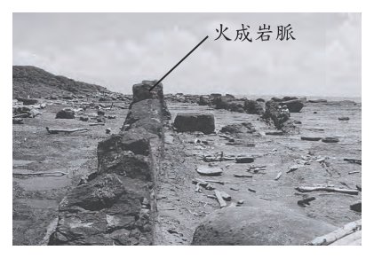
- （A）火成岩脈最先形成，岩層再沉積，最後海水侵蝕
- （B）岩層最先沉積，火成岩脈再形成，最後海水侵蝕
- （C）海水最先侵蝕，岩層再沉積，最後火成岩脈形成
- （D）火成岩脈最先形成，海水再侵蝕，最後岩層沉積
答案：（B）
詳解與考點
正解：題幹指出火成岩脈是岩漿侵入「原有的岩層」形成，故岩層必先沉積；岩脈形成後，海水再侵蝕較易受蝕的原岩層，才留下抗蝕較強、如牆立在海蝕平臺上的岩脈。順序為岩層沉積→火成岩脈侵入→海水侵蝕，故 B 為正解。
A：把火成岩脈排在岩層沉積之前，違反岩漿必須侵入既有岩層才能形成岩脈的條件，錯誤。
C：把海水侵蝕排在岩層沉積之前，無法形成受侵蝕而留下岩脈的海蝕平臺，錯誤。
D：同樣把岩脈排在岩層之前，也把岩層沉積放到侵蝕之後，先後關係顛倒，錯誤。
本題考點：相對定年——被侵入的岩層必早於侵入它的岩脈；差異侵蝕——岩脈抗蝕性較強時，海水侵蝕較軟岩層後會使岩脈突出。
第 11 題
圖(六)為小琪進行實驗的步驟示意圖：圖(五) + + 圖(六) 關於此實驗，下列說明何者正確？
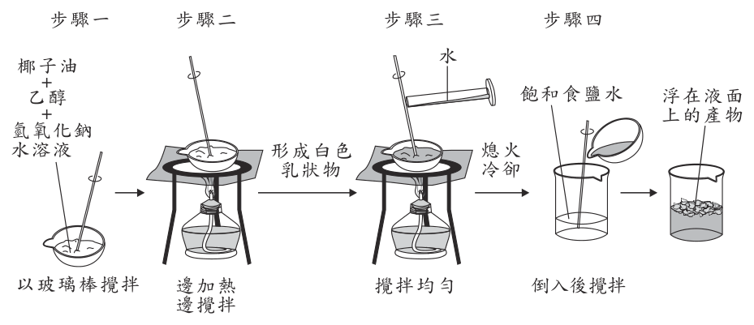
- （A）步驟一蒸發皿中的物質均為反應物
- （B）步驟二的目的可以避免反應速率過快
- （C）步驟三所加入的水是催化劑
- （D）步驟四的目的是為了分離不同的生成物
答案：（D）
詳解與考點
正解：題幹是肥皂製造的皂化實驗，油脂與氫氧化鈉水溶液加熱後生成肥皂與甘油；步驟四加入飽和食鹽水並攪拌，肥皂在高濃度鹽水中的溶解度降低而浮在液面，利用鹽析把肥皂與甘油、水層分離。D 符合步驟四的目的，故為正解。
A：步驟一蒸發皿中並非所有物質都是反應物，題述「均為反應物」不符實驗內容。
B：加熱的目的是加快、促進皂化反應，不是避免反應速率過快，錯誤。
C：步驟三加入的水不是催化劑，而是溶劑與反應物之一，錯誤。
本題考點：皂化反應——油脂與氫氧化鈉水溶液加熱可生成肥皂與甘油；鹽析分離——加入飽和食鹽水會降低肥皂溶解度，使其與甘油、水層分離。
第 12 題
道耳頓提出原子說後，越來越多的科學發現及證據顯示，原始的原子說需要修正。下列哪一項最可能是因為電子的發現，原子說需要修正的內容？
- （A）物質均由原子組成，原子不可再分割
- （B）相同元素的原子，有相同的質量和性質
- （C）不同元素的原子，有不同的質量和性質
- （D）化學反應是原子的重新排列組合，形成新的物質
答案：（A）
詳解與考點
正解：電子的發現證明原子內部還有更小的粒子，直接否定道耳頓原子說中「原子不可再分割」的說法。因此「物質均由原子組成，原子不可再分割」這一內容需要修正，A為正解。
B：相同元素的原子具有相同的質量和性質，與電子發現直接指出的「原子可再分」無關，錯誤。
C：不同元素的原子有不同的質量和性質，也不是因電子發現而直接需要修正的內容，錯誤。
D：化學反應可視為原子的重新排列組合而形成新物質，電子的發現不會直接推翻此概念。它看起來對，是因為電子也參與化學反應，但題目問的是電子發現直接要求修正的原始原子說內容，錯誤。
本題考點：原子模型演變——新證據會修正舊理論；電子的發現證明原子具有內部結構，故「原子不可再分割」須修正；判斷時要找與新發現有直接衝突的原始主張。
第 13 題
「白噪音」為一種人類可聽見的聲波，此聲波在各頻率的響度大致相同。在自然界中，類似的聲音包括雨聲、海浪聲等，而家中電風扇所製造出的聲音也與白噪音相似。科學家研究發現，嬰兒處在有此種白噪音的環境下，會比較容易入睡。根據上述，下列響度與頻率的關係圖，何者最適合用來表示此種幫助入睡的白噪音？
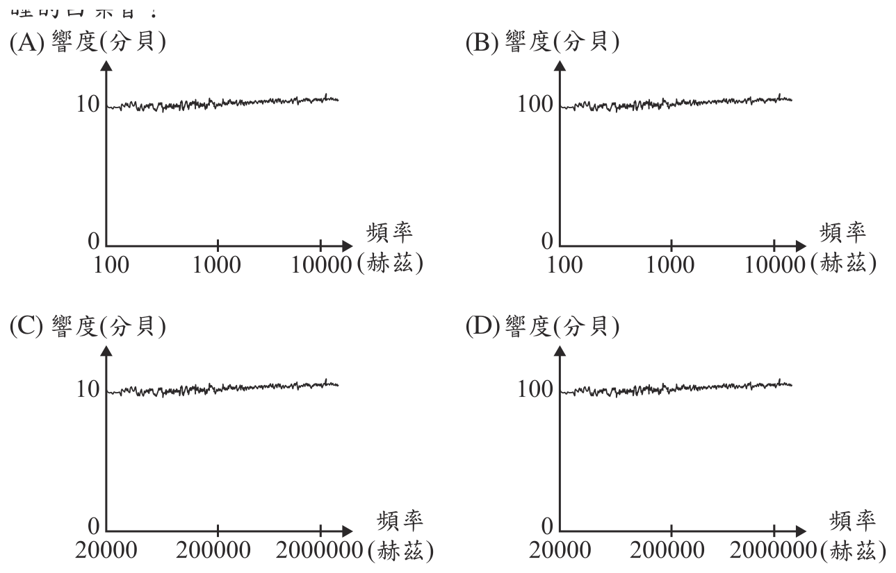
本題選項為上圖中的 A／B／C／D，請對照圖片作答。
答案：（A）
詳解與考點
正解：題幹定義白噪音為各頻率的響度大致相同，且是人類可聽見、能幫助嬰兒入睡的聲波。因此關係圖應呈近似水平線，頻率也應落在人耳可聽範圍約20～20000Hz內。A的頻率軸為100～10000Hz，響度維持約10分貝的水平線，最符合條件，故A為正解。
B：頻率範圍雖合理，但響度約100分貝過大，不符合幫助入睡的柔和聲音情境，錯誤。
C：頻率軸達200000～2000000Hz，遠超人耳可聽範圍，不能是題幹所述人類可聽見的白噪音，錯誤。
D：頻率軸同樣遠超人耳可聽範圍，錯誤。它看起來對，是因為響度可能呈水平，但頻率條件也必須符合人耳可聽範圍。
本題考點：白噪音——各頻率響度大致相同，圖形近似水平；人耳可聽頻率約20～20000Hz；圖表判讀須同時檢查響度與頻率範圍是否符合題幹情境。
第 14 題
已知DDT是一種作為殺蟲劑的化合物，難以被生物代謝。表(二)為某地區食物鏈中甲、乙、丙、丁四種生物體內含有的DDT濃度。已知其中一種生物為生產者，根據上述，下列推論何者正確？
表(二)| 生物種類 | 甲 | 乙 | 丙 | 丁 |
|---|
| 體內DDT的含量(ppm) | 2.0 | 0.2 | 20 | 0.04 |
- （A）食性關係可能為丙→甲→乙→丁
- （B）食性關係可能為丁→乙→甲→丙
- （C）丙生物最可能為此食物鏈中的生產者
- （D）甲生物最可能為此食物鏈中的三級消費者
答案：（B）
詳解與考點
正解：DDT難以被生物代謝，會沿食物鏈逐級累積，營養階層越高，體內濃度越高。表(二)中丁為0.04ppm、乙為0.2ppm、甲為2.0ppm、丙為20ppm，依低到高排列為丁＜乙＜甲＜丙；因此食性關係可能為丁→乙→甲→丙，B為正解。
A：丙的DDT濃度20ppm最高，卻放在食物鏈起點，與生物放大作用的濃度遞增方向不符，錯誤。
C：丙的濃度20ppm最高，最不可能是生產者；丁的0.04ppm最低才最可能是生產者，錯誤。
D：甲的濃度2.0ppm上方還有丙的20ppm，甲不是此四階食物鏈中的最高階消費者，錯誤。它看起來對，是因為甲濃度已高於乙、丁，但仍須比較全部數值。
本題考點：生物放大作用——難代謝的污染物會沿食物鏈累積；生產者的濃度最低，營養階層越高濃度越高；由表格判讀時先將0.04、0.2、2.0、20依數值由低至高排序。
第 15 題
阿正閱讀一篇報導寫著：日本學者分析史前人類遺骸後，認為當時住在沖繩的史前人類很可能來自於臺灣，研究團隊為了驗證從臺灣航海遷徙的可能性，於2019年進行實驗。如圖(七) 所示，阿正認為研究團隊會選在夏天進行實驗，是因為這時的洋流與季風風向有助於從臺灣航海向北至沖繩列島，進而到達日本列島。根據阿正的判斷，研究團隊進行實驗時的季風風向與洋流應為下列何者？
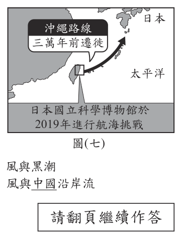
- （A）東北季風與黑潮
- （B）西南季風與黑潮
- （C）東北季風與中國沿岸流
- （D）西南季風與中國沿岸流
答案：（B）
詳解與考點
正解：題幹的關鍵是夏天從臺灣航海向北到沖繩列島；須選擇同時有利北上的季風與洋流。臺灣夏季吹西南季風，風向由西南往東北；臺灣東側的黑潮為暖流，由南向北流，兩者皆有助北上航行，故B為正解。
A：東北季風是冬季風，風向往西南，不利由臺灣向北航行，錯誤。
C：東北季風不符夏季，且中國沿岸流為冬季沿中國沿岸南下的洋流，兩者皆不利北上，錯誤。
D：西南季風雖有利北上，但中國沿岸流為南下洋流，與題目所需方向相反，錯誤。它看起來對，是因為季風正確，但航行判斷必須同時符合洋流方向。
本題考點：臺灣周邊的季風與洋流——夏季盛行西南季風，由西南往東北；黑潮由南向北流經臺灣東側；判斷航行條件時，季風與洋流方向都要與目的地一致。
第 16 題
已知維管束植物可進行某種代謝作用，其反應式為：「甲+二氧化碳→氧氣+乙+水」。有關甲的名稱及其在植物體內主要運送的構造，下列何者最合理？
- （A）水，由木質部運送
- （B）水，由韌皮部運送
- （C）葡萄糖，由木質部運送
- （D）葡萄糖，由韌皮部運送
答案：（A）
詳解與考點
正解：反應式「甲＋二氧化碳→氧氣＋乙＋水」是光合作用的反應式，反應物甲為水，乙為葡萄糖。植物由根吸收的水分主要經木質部中的導管向上運送至葉片，供光合作用使用，因此A為正解。
B：水分主要由木質部運送，不是由韌皮部運送，錯誤。
C：葡萄糖是光合作用產物乙，不是反應物甲，且木質部主要運水，錯誤。
D：葡萄糖雖可由韌皮部運送，但它是乙而非甲，錯誤。它看起來對，是因為韌皮部確實運送有機養分，但題目問的是反應物甲。
本題考點：光合作用與維管束功能——光合作用可寫為水＋二氧化碳→氧氣＋葡萄糖＋水；反應式左側為反應物，故甲為水；木質部主要運送水分與無機鹽類，韌皮部主要運送有機養分。
第 17 題
表(三)為四位學生對於有機化合物、無機化合物中組成元素的說明，哪一位學生的說明最合理？
表(三)| 學生 | 有機化合物 | 無機化合物 |
|---|
| 小玉 | 必含C | 必不含C |
| 小如 | 必含C | 可以含C |
| 小方 | 必含C、O | 必不含C、O |
| 阿德 | 必含C、H、O | 可以含C、H、O |
- （A）小玉
- （B）小如
- （C）小方
- （D）阿德
答案：（B）
詳解與考點
正解：依表（三）判斷的關鍵是有機化合物必含C，而無機化合物可以含C。小如的說明正符合此判準，例如二氧化碳、碳酸鈣是含C的無機化合物，故B為正解。
A：無機化合物不一定不含C；二氧化碳、碳酸鈣皆是反例，錯誤。
C：無機化合物可含C、O，且有機化合物也不一定必含O，錯誤。
D：有機化合物不一定必含H、O，例如四氯化碳不含氫、氧，錯誤。
本題考點：有機與無機化合物——有機化合物以碳為骨架，必含C；無機化合物可以含C，不能以是否含碳作唯一絕對區分，二氧化碳與碳酸鹽是常見例外。
第 18 題
400米賽跑的距離剛好是室外標準跑道最內圈一圈的長度，比賽中選手需跑在自己的跑道上，因內、外圈跑道長度的差異，不同跑道的選手起跑位置需作對應調整，如圖(八)所示。在這項比賽中最先跑完400米的選手，他在比賽過程哪一項物理量的大小必高於其他所有選手？
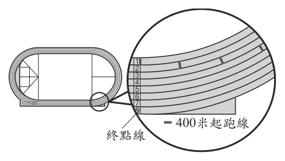
- （A）平均速率
- （B）平均速度
- （C）過程中速率的最大值
- （D）過程中速度的最大值
答案：（A）
詳解與考點
正解：題幹的關鍵是每位選手都跑完相同的400 m，應比較平均速率＝總路程÷總時間。最先跑完者所花時間最短，在總路程同為400 m下，平均速率必最大，故 A 為正解。
B：平均速度＝位移÷時間；各選手的起、終點位置不同，位移大小未必最大，錯誤。
C：過程中速率的最大值取決於個人的衝刺情形，先到終點不代表瞬時速率最大，錯誤。
D：過程中速度的最大值還包含方向，亦不能由最先抵達直接判定，錯誤。
本題考點：平均速率——總路程相同時，以總時間較短者較大；平均速度——須以位移除時間判斷，不能與平均速率混用；瞬時最大值——不能由完賽先後直接推出。
第 19 題
如圖(九)所示，一個半圓形軌道固定在水平桌面，軌道兩端均距水平桌面高度0.5 m，將一顆小球在距水平桌面高度1.0 m處，由靜止自由落下滑入半圓形軌道，若不計任何摩擦力或阻力，且小球滑過軌道最低點後，向上達到最高點時的動能為 0，則最高點距水平桌面高度為下列何者？
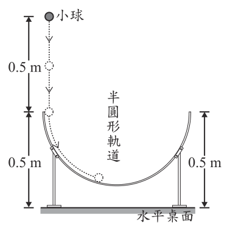
- （A）0.25 m
- （B）0.5 m
- （C）1.0 m
- （D）1.5 m
答案：（C）
詳解與考點
正解：題幹說不計摩擦力或阻力，且小球出發及最高點的動能皆為0，觸發力學能守恆。出發高度為1.0 m，初動能為0；最高點動能也為0，因此兩處重力位能相同，最高點距桌面高度為1.0 m，故 C 為正解。
A：0.25 m 是把軌道的局部高度誤當成最後高度，未用動能同為0的條件，錯誤。
B：0.5 m 是軌道兩端距桌面的高度，不是小球最高點的高度，錯誤。
D：1.5 m 高於原本靜止釋放的1.0 m，沒有外力作功時不可能得到額外機械能，錯誤。
本題考點：力學能守恆——無摩擦、無阻力時，動能與重力位能可互換；端點比較——兩處動能相同，則高度相同；干擾數據——軌道端點與最低點高度不必用於判斷最終高度。
第 20 題
表(四)為生物研究保育中心網頁中四種植物的部分資料，有關此四種植物在分類圖(九) 表(四) 階層上的敘述，下列何者無法確定？
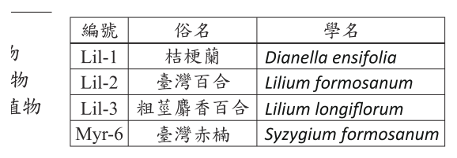
- （A）Lil-2和Lil-3為同科的植物
- （B）Lil-2和Myr-6為同目的植物
- （C）Lil-2和Lil-1為不同屬的植物
- （D）Lil-2和Myr-6為不同屬的植物
答案：（B）
詳解與考點
正解：題幹要判斷哪些分類階層可由學名得知。學名中的屬名可判斷是否同屬；同屬必同科、同目，但不同屬不一定能判斷是否同目。Lil-2 與 Myr-6 的屬名 Lilium、Syzygium 不同，只能確定不同屬，不能只靠學名確定是否同目，故 B 為正解。
A：Lil-2 與 Lil-3 同為 Lilium 屬；同屬植物必同科，所以可以確定。
C：Lil-2 與 Lil-1 的屬名分別為 Lilium、Dianella，不同屬，可以確定。
D：Lil-2 與 Myr-6 的屬名不同，因此不同屬，可以確定。
本題考點：學名判讀——學名可直接辨識屬名；分類階層——同屬必同科、同目，但不同屬是否同科或同目須有額外資料；無法確定題——只選現有資料不足以判斷的敘述。
第 21 題
圖(十)為太陽系中幾顆行星的比較，根據這些星球的特性來判斷，圖中的 X 軸與 Y 軸單位依序最可能為下列何者？
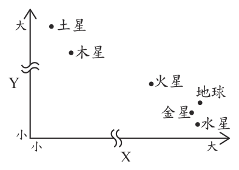
- （A）體積(cm3)、與太陽的平均距離(AU)
- （B）與太陽的平均距離(AU)、體積(cm3)
- （C）與太陽的平均距離(AU)、密度(g/cm3)
- （D）密度(g/cm3)、與太陽的平均距離(AU)
答案：（D）
詳解與考點
正解：圖中木星、土星在縱軸較高、橫軸較左，而類地行星集中在縱軸較低、橫軸較右。土星約距太陽 9.5 AU、木星約 5.2 AU，均比水星、金星、地球與火星遠，所以 Y 軸應為與太陽的平均距離。類地行星為岩質，密度約 4～5.5 g/cm³，較木星、土星的氣態密度大，因此 X 軸應為密度。故 X＝密度、Y＝與太陽的平均距離，選 D。
A：若 X 軸是體積，木星、土星應因體積大而偏右，與圖中偏左不符。
B：把 X、Y 軸分別判為距離與體積，仍無法解釋木星、土星在橫軸偏左。
C：若 Y 軸是密度，密度較大的類地行星應偏高；圖中偏高的卻是木星、土星。它看起來對，是因為距離與密度都能區分兩類行星，但軸向必須同時符合圖上位置。
本題考點：座標圖判讀——先以各軸由小到大的位置比對已知特徵；類地行星密度較大，氣態巨行星距太陽較遠；判別一軸後仍須檢查另一軸是否一致。
第 22 題
人體感染微生物到發病前所經過的時間稱為「潛伏期」。圖(十一)為小杉體溫恆定範圍及近十天每天早上的體溫紀錄，已知此段時間小杉感染了微生物X，其潛伏期為1～3天，發病時的症狀之一為體溫無法維持在恆定範圍內，則下列哪一天最可能為小杉初次感染此微生物的時間？
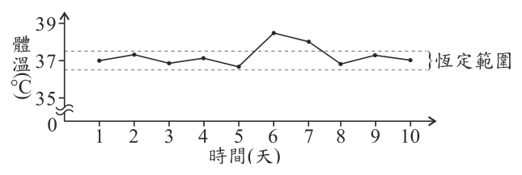
- （A）第1天
- （B）第3天
- （C）第6天
- （D）第8天
答案：（B）
詳解與考點
正解：發病的判準是體溫無法維持在恆定範圍內；圖中首次明顯超出恆定範圍的是第6天。潛伏期為1～3天，從第6天往前推：6−1=5、6−3=3，所以初次感染時間在第3至第5天；選項中只有第3天符合，故B為正解。
A：第1天到第6天相隔5天，超過1～3天的潛伏期，錯誤。
C：第6天是最可能的發病日，不是往前推得的感染日，錯誤。
D：第8天已在第6天發病之後，不可能是本次發病前的初次感染日，錯誤。
本題考點：潛伏期推算——先找出首次出現症狀的發病日，再向前推潛伏期範圍；體溫恆定——體溫超出恆定範圍是本題判定發病的依據。
第 23 題
甲、乙兩個質量相同的物體，靜置於無摩擦力的水平桌面上，甲、乙分別受到水平外力F甲、F乙後作直線運動，兩外力分別施力不同長短的時間後移除。已知兩物體在時間t＝0～60 s期間的速度(v)與時間(t)關係圖，如圖(十二)所示，則有關兩物體在此期間受力情形的敘述，下列何者正確？
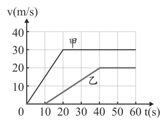
- （A）F甲施力時間較長，且外力大小F甲＞F乙
- （B）F甲施力時間較長，但外力大小F甲＜F乙
- （C）F乙施力時間較長，但外力大小F甲＞F乙
- （D）F乙施力時間較長，且外力大小F甲＜F乙
答案：（C）
詳解與考點
正解：題幹要由v-t圖判斷受力時間與力的大小；速度上升的區段表示仍受外力，加速度為圖線斜率。甲在0～20 s加速，乙在0～40 s加速，所以F乙施力時間較長。甲斜率約為30÷20，乙斜率約為20÷40；甲斜率較大。兩物體質量相同，依F=ma可知F甲＞F乙，故 C 為正解。
A：甲的加速區段只有0～20 s，並非施力較長，錯誤。
B：施力時間誤判為甲較長，且力的大小也比反，錯誤。
D：乙施力時間較長正確，但甲的v-t圖斜率較大，故不應判F甲＜F乙，錯誤。它看起來對，是因為容易只看加速持續時間，忽略斜率才表示加速度。
本題考點：v-t圖——斜率表示加速度，水平線表示等速；受力時間——無摩擦水平面上，加速區段即外力作用區段；牛頓第二運動定律——質量相同時，加速度較大則合力較大。
第 24 題
圖(十三)為物質進出膜的實驗裝置，先在試管中裝入葡萄糖液，並將試管口用一層膜密封，再倒置於裝有澱粉液的燒杯中。已知葡萄糖能通過此膜，但澱粉不能通過此膜，若靜置一段時間平衡後，分別取出溶液以試劑進行檢測，則出現下列何現象最合理？
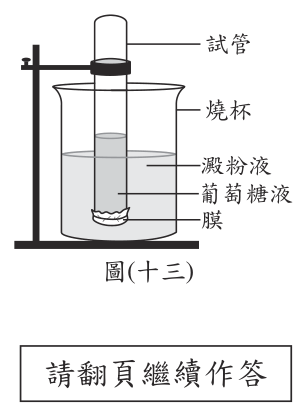
- （A）以碘液檢測，僅試管中的溶液變色
- （B）以碘液檢測，試管和燒杯中的溶液皆變色
- （C）以本氏液檢測，僅試管中的溶液變色
- （D）以本氏液檢測，試管和燒杯中的溶液皆變色
答案：（D）
詳解與考點
正解：題幹給定葡萄糖能通過膜、澱粉不能通過膜，應先依物質能否通過膜判斷分布。葡萄糖由試管擴散至燒杯，平衡後兩邊都有葡萄糖；本氏液可檢測還原糖，因此試管和燒杯的溶液皆變色，D 為正解。
A：碘液檢測的是澱粉；澱粉只留在燒杯，應是燒杯變色，不是僅試管變色。
B：澱粉不能通過膜，試管內沒有澱粉，碘液不會使兩邊都變色。
C：忽略葡萄糖已擴散至燒杯；本氏液檢測時不會只有試管變色。
本題考點：擴散——可通過膜的葡萄糖會由濃度較高處擴散，至兩側皆有葡萄糖；試劑判讀——碘液檢測澱粉，本氏液檢測還原糖。
第 25 題
在超市買到的蘋果可能是幾個月前就已經採摘下來了。為了長時間保存，會在蘋果表面塗上食用蠟，減少與氧氣接觸。蘋果熟化過程會將澱粉轉成糖，過程中會需要氧氣並產生二氧化碳，所以可藉由調整蘋果存放環境的氣體比例，減緩蘋果的熟化過程，延長保存期限。上述提及調整存放環境的氣體比例，其示意圖最可能為下列何者？
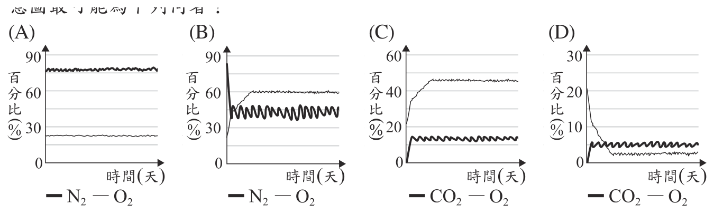
本題選項為上圖中的 A／B／C／D，請對照圖片作答。
答案：（D）
詳解與考點
正解：題幹指出蘋果熟化需要O2並產生CO2，保鮮要降低O2並避免CO2累積。D圖的O2與CO2皆維持在約5％上下的低百分比且穩定，符合調整氣體比例以抑制呼吸、延緩熟化，故 D 為正解。
A：圖示為N2與O2，未呈現題幹特別指出、熟化會產生的CO2，錯誤。
B：同樣只呈現N2與O2，不能說明CO2是否累積，錯誤。
C：CO2升至約45％，與避免CO2累積的保鮮條件不符，錯誤。
本題考點：植物呼吸——消耗O2並產生CO2；控制氣氛保存——降低O2以減慢呼吸，並使CO2不過度累積；讀圖判準——選同時符合兩種氣體變化的圖。
第 26 題
砒霜是一種毒物，主成分為三氧化二砷(As 2O 3)。古代製作砒霜的技術較不成熟，砒霜中會含有少量的不純物質――硫或硫化物，硫或硫化物接觸到銀，會使銀氧化產生黑色的硫化銀(Ag 2S)，這就是古裝劇中常見的以銀針試毒，銀針變黑即表示有毒。依據上述，下列推論何者最合理？
- （A）硫化物發生還原反應而使銀針變黑
- （B）銀針變黑，是因為三氧化二砷被還原的結果
- （C）砒霜的純度越高，與銀針反應變黑的結果越明顯
- （D）將銀針改成活性較小的金屬如黃金，也會反應產生硫化物
答案：（A）
詳解與考點
正解：官方答案為 A；題幹指出銀被氧化成黑色的硫化銀Ag2S，依電子守恆，必有另一物種被還原。若反應物為元素硫，硫由0價降為−2價，可支持 A；惟若反應物已是硫化物，其中的硫通常原為−2價，生成Ag2S後仍為−2價，不能據此說該硫化物被還原。題幹將「硫或硫化物」併列，A 的敘述不夠嚴謹，仍依官方答案選 A。
B：銀針變黑的直接原因是銀生成黑色的硫化銀；題幹沒有三氧化二砷被還原的資訊。
C：砒霜純度越高，表示能使銀變黑的硫或硫化物雜質越少，反應應越不明顯，方向相反。
D：黃金的活性比銀小，較難被氧化，不易與硫或硫化物反應生成硫化物。
本題考點：氧化還原——物質失去電子為氧化、得到電子為還原；判斷何者被還原，須比較反應前後同一元素的氧化數，不能只由銀被氧化就斷定原有的硫化物必被還原。
第 27 題
取甲、乙兩種化合物，分別在足量的氧氣中燃燒，反應式分別為：關於甲、乙兩種化合物的比較與說明，下列何者正確？
- （A）甲的分子量大於乙，且甲可能為醇類
- （B）甲的分子量大於乙，且甲可能為烴類
- （C）乙的分子量大於甲，且乙可能為醇類
- （D）乙的分子量大於甲，且乙可能為烴類
答案：（A）
詳解與考點
正解：甲的燃燒式為「甲＋3O2→2CO2+3H2O」。依原子守恆，甲含 2 個碳、6 個氫；生成物共有 7 個氧，扣除 3O2 提供的 6 個氧，甲本身還含 1 個氧，所以甲可為 C2H6O，分子量為 2×12+6×1+16=46，可能是醇類。乙的燃燒式為「乙＋3O2→2CO2+2H2O」，同理可得乙為 C2H4，分子量為 2×12+4×1=28。甲的分子量大於乙，且甲可能為醇類，故 A 為正解。
B：甲可為 C2H6O，含有氧元素，不是只含碳、氫的烴類；雖然分子量大小的比較正確，物質分類仍錯誤。
C：乙的分子量 28 小於甲的 46，且乙為 C2H4，不含氧，不能判為醇類。
D：乙為 C2H4，確實可能是烴類，但乙的分子量 28 小於甲的 46，大小關係錯誤。
本題考點：先依燃燒反應式與原子守恆反推出化合物的分子式，再計算分子量並分類；醇類含 C、H、O，烴類只含 C、H。
第 28 題
圖(十四)為小佐某天前往圖中甲地旅遊前所查詢的地面天氣簡圖，圖中黑色實線為等壓線，已知圖中 H 和 L 的天氣系統未來會向圖中箭頭所指的方向移動，因此他認為接下來甲地應為晴朗的天氣。下列關於天氣系統H的敘述，何者最能用來說明小佐的看法？
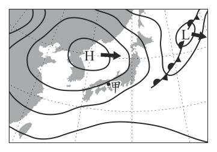
- （A）中心近地面的氣流下沉，水氣不易凝結
- （B）中心近地面的氣流上升，水氣不易凝結
- （C）中心近地面氣壓比附近外圍低，水氣含量較少
- （D）中心近地面氣壓比附近外圍高，水氣含量較高
答案：（A）
詳解與考點
正解：題幹的H代表高氣壓系統，甲地將受其影響時，應以高壓的垂直氣流解釋晴朗天氣。高氣壓中心近地面的氣流下沉，下沉時空氣增溫、相對溼度下降，水氣不易凝結成雲，故 A 為正解。
B：中心近地面氣流上升是低氣壓的特徵，水氣較易凝結成雲，錯誤。
C：H中心近地面氣壓應比附近外圍高，題述「較低」錯誤。
D：高壓晴朗的關鍵是下沉使水氣不易凝結，且「水氣含量較高」不能支持晴朗，錯誤。
本題考點：高氣壓——中心近地面氣壓較高、空氣下沉；下沉增溫——相對溼度下降，水氣不易凝結；天氣判讀——高壓移入通常帶來較晴朗天氣。
第 29 題
小泉暑假時到武嶺一日遊，他從臺中住家開車出發，途中經清境農場稍作休息後，再開車上武嶺，之後再返回臺中住家，如圖(十五)所示。根據圖中資訊，當天不同時間時，小泉所在環境的氣壓與氣溫關係圖，何者最合理？
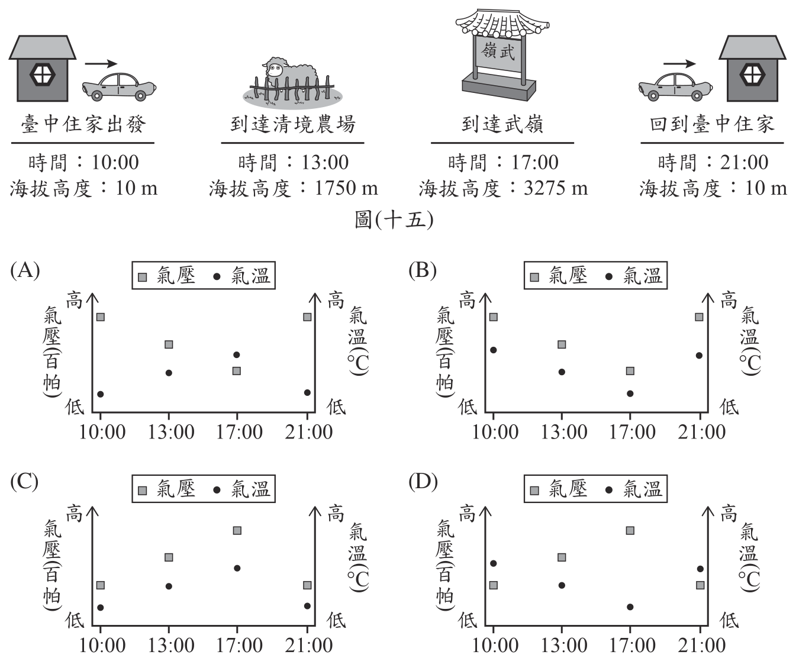
本題選項為上圖中的 A／B／C／D，請對照圖片作答。
答案：（B）
詳解與考點
正解：題幹行程從臺中住家約 10 m，經清境農場約 1750 m，到武嶺約 3275 m，再回到約 10 m；應用海拔越高、氣壓與氣溫越低的關係判圖。上山時海拔由 10 m 升至 1750 m、3275 m，氣壓與氣溫都應依序下降；下山回住家時都應回升。B 圖的氣壓與氣溫皆在 17:00 武嶺達最低，符合條件，故為正解。
A：A 的氣溫沒有隨海拔升至武嶺而降到最低，與高山較冷不符。
C：C 在 17:00 武嶺把氣壓畫為最高，與海拔越高氣壓越低相反。
D：D 在 17:00 武嶺的氣壓亦為最高，錯誤。
本題考點：海拔與氣壓、氣溫——海拔升高時，氣壓降低、氣溫降低；行程圖判讀——先依地點排序海拔，再檢查兩項環境量是否同向下降與回升。
第 30 題
圖(十六)為阿榮在購物網站上搜尋黑麻油所獲得的部分結果，圖中的數值為黑麻油的內容物含量及價格，他比較甲、乙兩種品牌的含量，覺得數值有不合理之處。下列關於甲、乙兩牌標示的敘述，何者最合理？ ※1 c.c.＝1 cm 3 圖(十六)
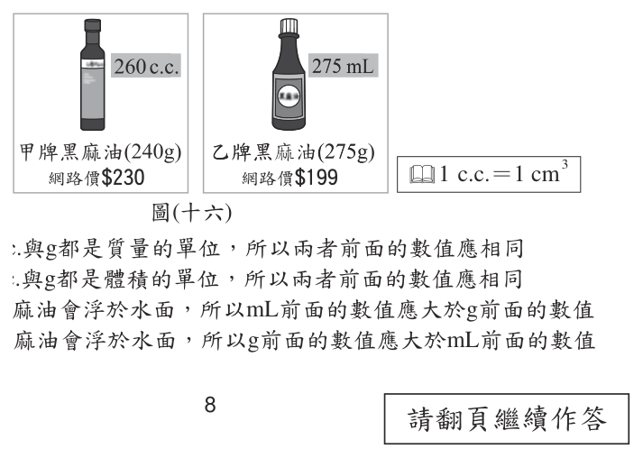
- （A）甲牌有誤：c.c.與g都是質量的單位，所以兩者前面的數值應相同
- （B）甲牌有誤：c.c.與g都是體積的單位，所以兩者前面的數值應相同
- （C）乙牌有誤：黑麻油會浮於水面，所以mL前面的數值應大於g前面的數值
- （D）乙牌有誤：黑麻油會浮於水面，所以g前面的數值應大於mL前面的數值
答案：（C）
詳解與考點
正解：題幹給1 c.c.＝1 cm³＝1 mL，並指出黑麻油浮於水面，應以密度判斷。同體積下，黑麻油密度小於1 g/mL，所以質量的g數值應小於體積的mL數值。乙牌標275 mL、275 g，密度等於1 g/mL，與浮於水面矛盾；mL前數值應大於g前數值，故 C 為正解。
A：c.c.是體積單位，g是質量單位，兩者並非都是質量單位，錯誤。
B：g不是體積單位，且不同密度物質的體積與質量數值不必相同，錯誤。
D：黑麻油密度小於水時，同體積的g數值應小於mL數值，大小關係說反，錯誤。
本題考點：單位換算——1 c.c.＝1 cm³＝1 mL；密度＝質量÷體積；浮沉判準——浮於水面的物質密度小於1 g/mL。
第 31 題
阿芳利用複式顯微鏡觀察小魚尾鰭內血液流動的方向，所觀察到的視野影像如圖( 十七) 所示，圖中的箭頭表示血液流動方向。若將培養皿往左緩慢地移動，則在視野中依序消失的血管，應為下列何者？
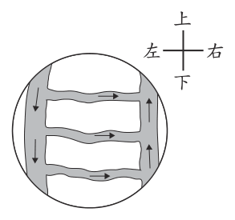
- （A）小動脈、微血管、小靜脈
- （B）小動脈、小靜脈、微血管
- （C）小靜脈、微血管、小動脈
- （D）小靜脈、小動脈、微血管
答案：（C）
詳解與考點
正解：題幹要同時判讀血流方向與複式顯微鏡的倒立像。血流由左管經中央細管流向右管，所以左為小動脈、中央為微血管、右為小靜脈。培養皿往左移，視野中的影像往右移，最右側的小靜脈先消失，依序為小靜脈、微血管、小動脈，故 C 為正解。
A：把最左側的小動脈誤判為先離開視野，未考慮影像與實物移動方向相反，錯誤。
B：小動脈不會最先消失，且小靜脈與微血管的順序也錯誤。
D：小靜脈先消失正確，但中央微血管應在小動脈之前消失，錯誤。
本題考點：血流方向——小動脈經微血管流向小靜脈；複式顯微鏡——影像與玻片實物移動方向相反；位置判讀——實物左移時，視野影像右移。
第 32 題
下列為某牌口香糖廣告的說明：人體口腔中的環境接近中性，在用餐後一段時間會變酸，而增加蛀牙機率。除了每日正確刷牙外，在餐後嚼食無糖口香糖，可刺激唾液分泌，有效「平衡」口中酸性。此廣告搭配了兩張圖用以輔助說明，一張為圖(十八)，另一張圖最可能為下列何者？
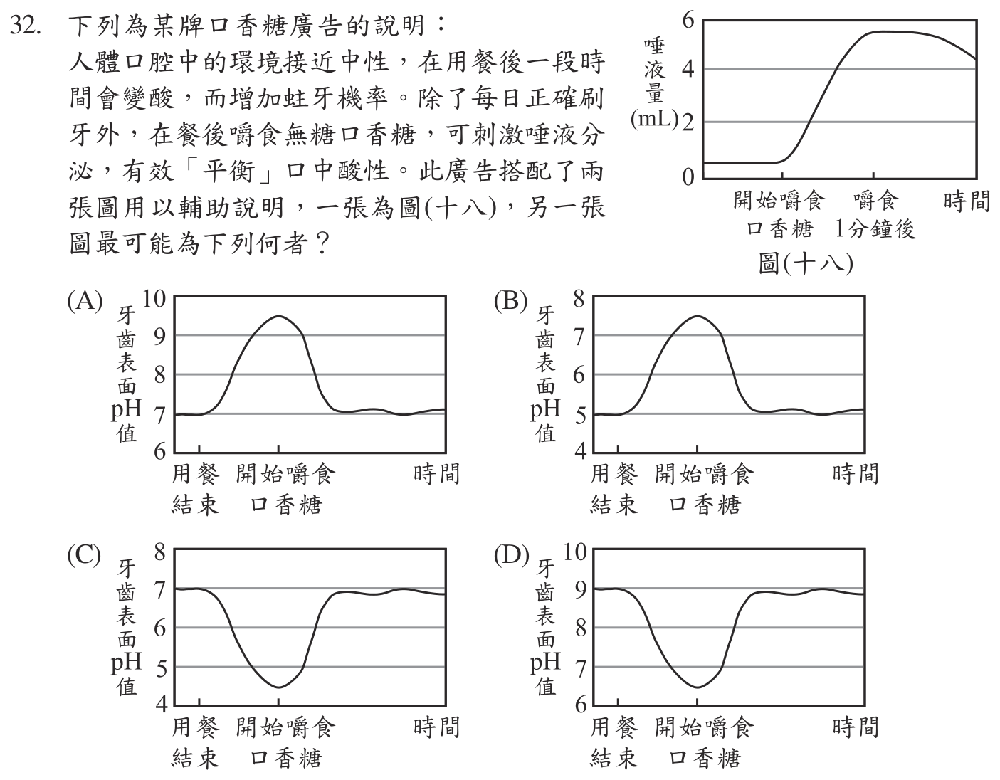
本題選項為上圖中的 A／B／C／D，請對照圖片作答。
答案：（C）
詳解與考點
正解：題幹的關鍵是餐後口腔先變酸、嚼無糖口香糖後唾液使酸性回到接近中性，應找pH先降後升的圖。C圖由約7降至約5，開始嚼口香糖、唾液分泌後又回升至約7，符合說明，故 C 為正解。
A：pH先升到約9～10，代表先變鹼性，與餐後變酸相反，錯誤。
B：同樣先往偏鹼方向變化，無法表示餐後酸性增加，錯誤。
D：起點即為偏鹼性，不符合口腔環境接近中性、餐後才變酸的條件，錯誤。
本題考點：pH判讀——pH=7為中性，小於7為酸性；餐後口腔——酸性增加時pH下降；唾液作用——刺激分泌後使pH回升至接近中性。
第 33 題
一木塊靜置於粗糙的水平面上，分別對此木塊施以不同大小的水平外力，木塊與水平面間對應的摩擦力大小及運動狀態如表(五)所示。若木塊與水平面間的最大靜摩擦力大小為f s，根據表中資訊，推論f s的大小關係，下列何者最合理？
表(五)| 外力(gw) | 摩擦力(gw) | 運動狀態 |
|---|
| 100 | 100 | 靜止不動 |
| 200 | 200 | 靜止不動 |
| 300 | 250 | 等加速度運動 |
| 400 | 250 | 等加速度運動 |
- （A）f s＜200 gw
- （B）200 gw＜f s＜250 gw
- （C）250 gw＜f s＜300 gw
- （D）f s＞300 gw
答案：（C）
詳解與考點
正解：題幹附表顯示外力200 gw時仍靜止，外力300 gw時已等加速度運動，應用最大靜摩擦力的範圍判斷。靜止時fs≧200 gw；300 gw已能推動木塊，故fs<300 gw。又300、400 gw運動時動摩擦力均為250 gw，最大靜摩擦力不小於動摩擦力，得fs≧250 gw。因此250 gw<fs<300 gw，故 C 為正解。
A：fs若小於200 gw，外力200 gw時不會仍靜止，錯誤。
B：忽略動摩擦力為250 gw，最大靜摩擦力不應低於250 gw，錯誤。
D：fs若大於300 gw，外力300 gw時不會使木塊開始等加速度運動，錯誤。
本題考點：靜摩擦力——靜止時大小隨外力調整，最大值為fs；動摩擦力——滑動時依表為250 gw；範圍判定——以未動的外力給下限、已推動的外力給上限。
第 34 題
秀春買了一個電火鍋，圖(十九)為電火鍋上的電器標示，依據標示的資訊，在正常使用的情形下，此電火鍋達到最大功率時，每分鐘消耗多少的電能？
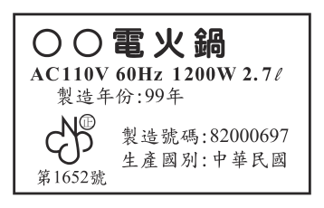
- （A）20 J
- （B）110 J
- （C）1200 J
- （D）72000 J
答案：（D）
詳解與考點
正解：題幹要求每分鐘消耗的電能，應用電能＝功率×時間。最大功率P=1200 W=1200 J/s；1分鐘＝60 s；電能E=P×t=1200×60=72000 J，故 D 為正解。
A：20 J沒有由1200 W與60 s相乘得到，錯誤。
B：110是電壓110 V的數值，不能直接當作電能，錯誤。
C：1200 J是漏乘60 s，把1200 W誤當成每分鐘電能，錯誤。它看起來對，是因為瓦特的數值與焦耳相同，但W是每秒的能量變化率。
本題考點：電功率——1 W=1 J/s；電能計算——E=P×t；時間換算——1分鐘＝60 s後再代入公式。
第 35 題
圖(二十)為草莓花朵構造及其發育的示意圖，已知草莓是由花托處膨大而來，若圖(二十一)中的構造是由草莓的子房發育而成，則此構造應稱為下列何者？圖(二十) 圖(二十一)
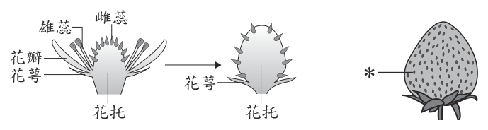
- （A）胚珠
- （B）種子
- （C）果實
- （D）花粉
答案：（C）
詳解與考點
正解：題幹雖說草莓的食用部位由花托膨大而來，仍特別問子房發育而成的構造，應依花的發育對應關係判斷。子房成熟後發育成果實；草莓表面一粒粒由子房發育成的瘦果即為果實，故 C 為正解。
A：胚珠位於子房內，是尚未發育的構造，不是子房發育的結果，錯誤。
B：種子是由胚珠發育而來，不是由子房直接發育而來，錯誤。
D：花粉由雄蕊的花藥產生，與子房發育無關，錯誤。
本題考點：花的發育——子房發育成果實，胚珠發育成種子；草莓——花托膨大形成食用部位，屬假果；部位判準——先分清題目問的是子房或胚珠。
第 36 題
小逸每天中午都會記錄升旗臺上的竿影變化，他經過多年的測量發現在不考慮天氣因素的情況下，每年的1月底及11月底各有 1次中午無竿影的紀錄。已知升旗臺上的旗竿鉛直立於水平地面上，根據上述資訊，升旗臺的所在位置最可能位於圖(二十二)中甲、乙、丙、丁的哪一點？
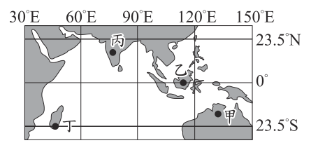
- （A）甲
- （B）乙
- （C）丙
- （D）丁
答案：（A）
詳解與考點
正解：題幹的「中午無竿影」表示太陽直射該地，且1月底與11月底各一次，應以太陽直射點的往返範圍判斷。太陽直射只在南、北回歸線之間發生；這兩日期對稱於冬至，直射點在南半球低緯。甲位於赤道與南回歸線之間，符合一年可被直射兩次的條件，故 A 為正解。
B：乙近赤道，直射日期不會對應題述的1月底與11月底，錯誤。
C：丙在北半球，與此時直射點位於南半球不符，錯誤。
D：丁不在可對應該兩個直射日期的南半球低緯帶，錯誤。
本題考點：無竿影——中午太陽直射時，鉛直物體影長為0；太陽直射範圍——僅在南北回歸線之間往返；日期判讀——冬至前後的直射點位於南半球。
第 37 題
如圖(二十三)所示，有一電路裝置固定放置在水平面上，甲、乙兩段南北向的導線分別置於兩馬蹄型磁鐵所形成的磁場中，磁場恰好與甲、乙兩段導線垂直。判斷甲、乙兩段導線在磁場中所受磁力的方向，下列敘述何者正確？
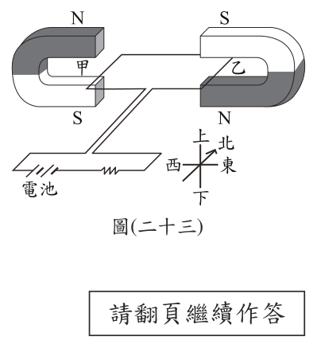
- （A）甲、乙均向東
- （B）甲、乙均向西
- （C）甲向東，乙向西
- （D）甲向西，乙向東
答案：（B）
詳解與考點
正解：題幹中甲、乙導線的磁場方向相反，而同一迴路使兩段電流方向也相反，應同時套用載流導線受磁力的方向判斷。電流與磁場都反向時，受力方向相同；依圖示定則，甲、乙受磁力皆向西，故 B 為正解。
A：甲、乙同向的判斷雖保留，但實際方向應向西而非向東，錯誤。
C：誤以為兩段導線受力必相反，忽略電流與磁場方向都同時相反，錯誤。
D：同樣把兩段受力判為相反方向，錯誤。
本題考點：載流導線受磁力——方向由電流方向與磁場方向共同決定；雙重反向——電流與磁場皆反向時，磁力方向不變；判圖順序——先判各段電流，再判各段磁場，最後用定則判受力。
第 38 題
軟骨發育不全症是體染色體中FGFR3基因發生突變所造成，患者具有身材矮小、四肢短小變形等特徵，若親代只有其中一方為患者，子代就會有50%以上的罹病率。已知阿佑因發生突變而患有軟骨發育不全症，但其父母皆未患病，若以F代表突變的FGFR3遺傳因子，f代表正常的FGFR3遺傳因子，則關於阿佑父母基因型的推論，下列何者最合理？
- （A）父：Ff、母：Ff
- （B）父：Ff、母：ff
- （C）父：FF、母：FF
- （D）父：ff、母：ff
答案：（D）
詳解與考點
正解：題幹說只要親代一方帶有突變 F，子代罹病率就有50%以上，表示 F 為顯性突變。阿佑患病但父母都未患病，父母就都不能帶 F，只能皆為正常同型合子 ff；阿佑的 F 是新發突變，故 D 為正解。
A：父母皆為 Ff 都會表現患病，與題幹「父母皆未患病」矛盾，錯誤。
B：父親為 Ff 會表現患病，與題意矛盾，錯誤。
C：父母皆為 FF 更都會表現患病，與題意矛盾，錯誤。
本題考點：體染色體顯性遺傳——帶有顯性突變 F 即表現患病，未患病者基因型為 ff；新發突變——子代出現顯性突變、父母皆未患病時，可由生殖細胞或早期發育的突變解釋。
第 39 題
小櫻查詢了網路上的資料後，在月曆上把2個有特殊天文現象的日子作記號，如圖(二十四)所示。資料顯示在當月9日晚間可見到月食，而23日早上則可見到日食。根據此月曆，下列有關不同日期的月相何者最合理？
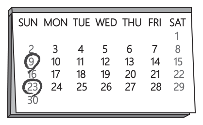
- （A）2日應為下弦月
- （B）16日應為滿月
- （C）23日應為下弦月
- （D）30日應為上弦月
答案：（D）
詳解與考點
正解：題幹指出 9 日晚間有月食、23 日早上有日食。月食發生在滿月，所以 9 日是滿月；日食發生在新月，所以 23 日是新月。由 23 日新月往後約 7 天，月相會到上弦月，因此 30 日應為上弦月，D 為正解。
A：2 日在 9 日滿月前約 7 天，應為上弦月，不是下弦月，錯誤。
B：16 日與 9 日相隔約 7 天，容易因兩者都落在顯著月相的日期而被選；但滿月後約 7 天會依序轉為下弦月，不會再成為滿月，錯誤。
C：23 日有日食，當日必為新月，不是下弦月，錯誤。
本題考點：月相與食象——月食發生於滿月，日食發生於新月；月相約每 7 天依序經過新月、上弦月、滿月、下弦月，先以食象定出月相，再推算前後日期。
第 40 題
下列為一則新聞報導：圖(二十四) 一場泳池慶生派對中，工作人員在泳池中倒入大量的液態氮，以製造煙霧效果並且炒熱氣氛，最後卻造成數人昏迷送醫。有人分析：「氮氣和池水中的氯會反應產生有毒的三氯化氮，對皮膚和呼吸道相當刺激。」小莫看完報導後，認為三氯化氮雖然有毒，但應該不是此次意外的原因，應是其他因素所致，下列何者最可能是她認為不是三氯化氮的理由？
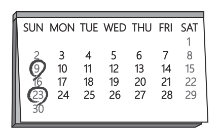
- （A）空氣中有大量氮氣，池水也會接觸氮氣，但一般泳池並沒有類似的意外
- （B）池水溫度會因液態氮汽化而下降，反而會加快產生三氯化氮的反應速率
- （C）泳池會加入較高濃度的氯氣用以殺菌消毒，故泳池的氯含量比自來水高
- （D）液態氮汽化後所產生的氣體會溶於池水中，與池水中的氯接觸機會增加
答案：（A）
詳解與考點
正解：題幹要找小莫認為「不是三氯化氮造成意外」的理由，應選能削弱該因果關係的反例。空氣中本有大量氮氣，池水也持續接觸氮氣；若氮氣與池水中的氯會大量生成三氯化氮並造成昏迷，一般泳池也應常有類似意外，但事實上沒有，故 A 為正解。
B：池水降溫若會加快三氯化氮產生，反而支持三氯化氮是原因，錯誤。
C：泳池氯含量較高會使反應物條件更充分，反而支持三氯化氮是原因，錯誤。
D：液態氮汽化後與池水中的氯接觸機會增加，也是在支持該因果關係，錯誤。
本題考點：因果反駁——找出原因平時存在而結果未出現的反例；立場判讀——題目問「不是原因」，選項必須削弱而非補強該說法；控制變因——比較一般泳池與事件情境的差異。
第 41 題
有甲、乙、丙三種固體純物質，三者對水的溶解情形及沸點如表(六)所示。有一份參雜甲、乙、丙的混合物，可經由兩步驟(加熱、加水過濾)而分離出甲、乙、丙，如圖(二十五)所示。表(六) 依據上述資訊，下列推論何者最合理？
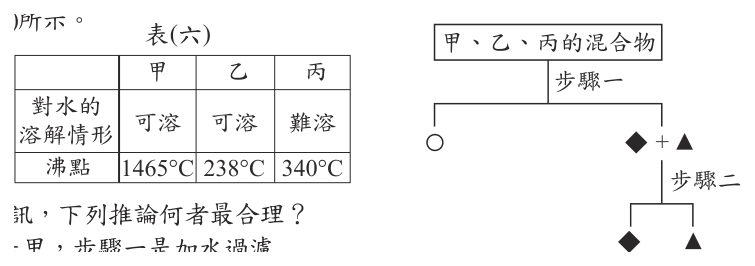
- （A）◆可能是甲，步驟一是加水過濾
- （B）◆可能是丙，步驟一是加水過濾
- （C）○可能是甲，步驟二需加熱至300℃，才可使乙、丙分離
- （D）○可能是丙，步驟二需加熱至1500℃，才可使甲、乙分離
答案：（A）
詳解與考點
正解：題幹要依溶解情形與沸點設計分離；甲、乙可溶於水，丙難溶於水。步驟一若加水過濾，難溶的丙會先被濾出，留下可溶的甲、乙；流程中◆可對應甲，符合後續再依沸點分離甲、乙，故 A 為正解。
B：丙難溶於水，應在步驟一過濾時先被分出，不應作為◆留在可溶物中，錯誤。
C：甲、乙的分離應依表中的沸點選合適加熱條件，300℃不能支持題述的分離，錯誤。
D：甲、乙不需加熱至1500℃才可分離，所述溫度與表中沸點資料不符，錯誤。
本題考點：加水過濾——難溶固體留在濾紙上，可溶物進入濾液；沸點差異——可用加熱使不同沸點物質分離；流程判讀——先以溶解度決定過濾結果，再以沸點安排加熱。
第 42 題
圖(二十六)、圖(二十七)兩種連接方式皆為甲、乙兩個燈泡並聯，小明與阿華皆認為圖(二十七)的接法，燈泡甲較不會因為線路故障而不亮，以下為兩人的解釋：小明：若燈泡乙的燈絲燒斷，在圖(二十六) 中會使得燈泡甲不亮，而在圖(二十七) 圖(二十六) 圖(二十七) 中燈泡甲仍會發亮。阿華：若導線丙、丁其中一條斷裂，在圖(二十六)中會使得燈泡甲不亮，而在圖(二十七)中燈泡甲仍會發亮。關於兩人的解釋是否合理？
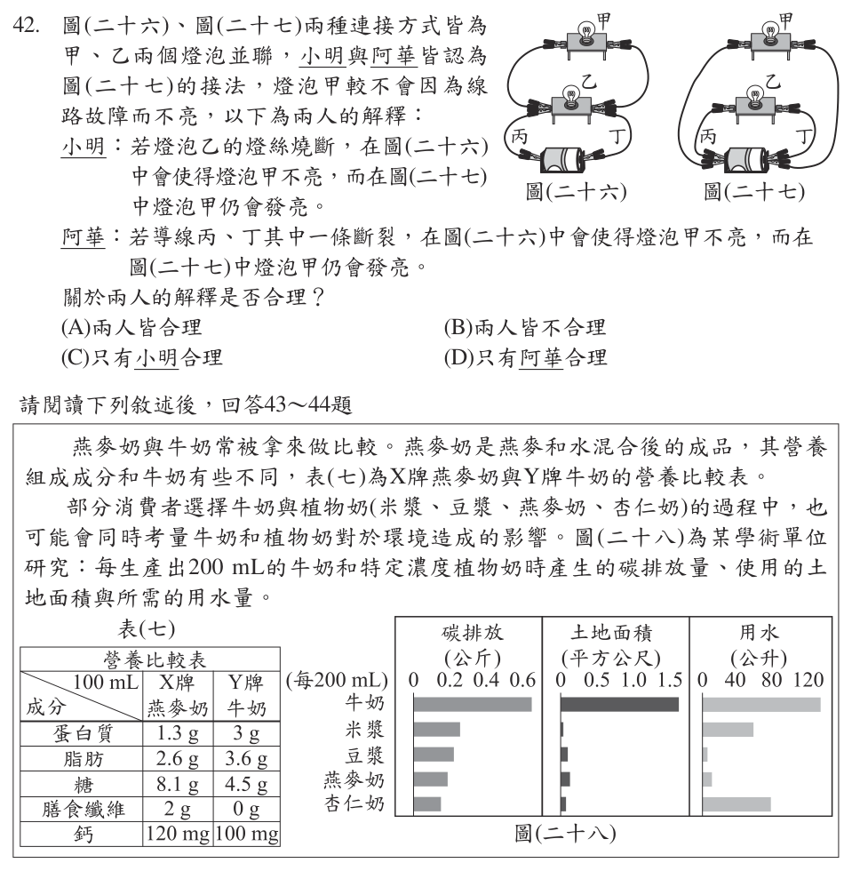
- （A）兩人皆合理
- （B）兩人皆不合理
- （C）只有小明合理
- （D）只有阿華合理
答案：（D）
詳解與考點
正解：兩圖中甲、乙皆為並聯，應分別判斷故障位置是否切斷甲的迴路。乙的燈絲燒斷只會切斷乙支路，甲支路仍可形成迴路，因此甲在兩種接法都會亮，小明不合理。圖二十六的導線丙、丁在共用幹線上，任一條斷裂會使甲失去迴路；圖二十七有另一條路徑可通往甲，丙、丁任一條斷裂時甲仍可發亮，阿華合理，故D為正解。
A：小明把乙支路故障誤當成會使甲支路斷路，不能判兩人皆合理，錯誤。
B：阿華對共用幹線與替代路徑的判斷合理，不能判兩人皆不合理，錯誤。
C：小明不合理、阿華合理，和本項「只有小明合理」相反，錯誤。
本題考點：並聯電路——一個支路斷路時，其他支路若仍與電源形成閉合迴路，燈泡仍會發亮；故障判讀——先找故障元件所在支路或幹線，再檢查是否存在替代通路。
第 43 題
若壯壯跟安安兩人對於早餐飲品的需求為：壯壯：我想要攝取較多的胺基酸。安安：我要減少攝取糖。則根據營養比較表，在攝取相同容量飲品的情況下，推論兩人的選擇，下列何者最合理？
- （A）兩人皆宜選擇牛奶
- （B）兩人皆宜選擇燕麥奶
- （C）壯壯選擇牛奶，安安選擇燕麥奶
- （D）壯壯選擇燕麥奶，安安選擇牛奶
答案：（A）
詳解與考點
正解：題幹要求在相同容量下同時比較胺基酸來源與糖攝取；胺基酸來自蛋白質。依營養比較表，每100 mL牛奶含蛋白質3 g，高於燕麥奶的1.3 g；牛奶含糖4.5 g，低於燕麥奶的8.1 g。因此壯壯與安安都宜選牛奶，A為正解。
B：每100 mL燕麥奶的蛋白質只有1.3 g，少於牛奶的3 g；糖有8.1 g，高於牛奶的4.5 g，不能滿足兩人的需求，錯誤。
C：壯壯選牛奶可攝取較多蛋白質，但安安選燕麥奶會攝取較多糖，不符條件，錯誤。
D：安安選牛奶較能減少糖攝取，但壯壯選燕麥奶會攝取較少蛋白質，不符條件，錯誤。
本題考點：營養標示比較——先把需求轉成表中可直接比較的營養素，胺基酸看蛋白質，減糖看糖；同容量判讀——統一以每100 mL的數值比較，不能拿碳水化合物代替糖。
第 44 題
根據本文，若只考量碳排放對於環境的影響，在相同的碳排放量下，推論下列何種飲品生產的量最多？
- （A）牛奶
- （B）米漿
- （C）燕麥奶
- （D）杏仁奶
答案：（D）
詳解與考點
正解：「在相同的碳排放量下，何種飲品生產的量最多」，這等於問「每 200 mL 排碳最少的是誰」。讀圖(二十八)最左欄「碳排放（公斤）」的柱長：牛奶約 0.6 最長，米漿約 0.24，豆漿約 0.2，燕麥奶約 0.18，杏仁奶約 0.14 為五者中最短。單位產量排碳最少者，在總碳排放固定時就能生產最多，故 D 為正解。
A：牛奶的碳排放柱一路逼近 0.6，是五種飲品中最高的，同樣碳排放額度下能生產的量反而最少，錯誤。
B：米漿約 0.24 僅次於牛奶，明顯長於燕麥奶與杏仁奶的柱子，不是排碳最少者，錯誤。
C：燕麥奶約 0.18 雖然偏低，但柱長仍略長於杏仁奶，排碳並非最少，錯誤。
本題考點：長條圖的反向比較——題目問「固定總量下產出最多」時，要先換算成「單位產量的耗用最少」再回圖比長度；另須辨認圖(二十八)橫向並列的是碳排放、土地面積、用水三個不同指標與不同刻度，本題只准讀碳排放欄，不可拿土地面積或用水的排序來作答。
第 45 題
根據本文第一段的資訊，下列有關Cp的敘述，何者最合理？
- （A）風力發電機葉片轉動的速率愈快，Cp值會愈大
- （B）風力發電機葉片轉動的速率愈快，Cp值會愈小
- （C）風力發電機葉片由風力獲得能量的比例愈高，Cp值會愈大
- （D）風力發電機葉片由風力獲得能量的比例愈高，Cp值會愈小
答案：（C）
詳解與考點
正解：Cp＝發電機葉片由風力中獲取的功率÷通過發電機前風力原始的功率，表示葉片由風力獲取能量的效率。分母所代表的原始風力功率一定時，葉片獲取的功率比例愈高，Cp 值就愈大，故 C 為正解。
A：葉片轉動速率快慢不直接等同於獲取功率占原始風力功率的比例，不能據此判定 Cp 必定變大。
B：同樣把葉片轉動速率與 Cp 建立了定義中沒有的直接關係，不能據此判定 Cp 必定變小。
D：獲取能量的比例愈高，代表效率愈高，Cp 應愈大而非愈小。
本題考點：功率係數 Cp 是「獲取的功率÷原始的功率」；判讀比值時，獲取比例愈高，係數愈大，不能另以葉片轉速取代定義中的兩項功率。
第 46 題
根據圖(三十)，假設原始的風速v 1為10 m/s，通過發電機後，最後的風速v2為多少時，會接近最大的Cp值？
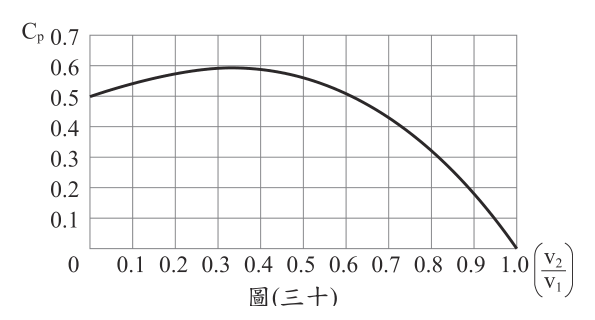
- （A）0
- （B）3.3 m/s
- （C）5.9 m/s
- （D）10 m/s
答案：（B）
詳解與考點
正解：題幹問風力發電接近最大Cp時的出口風速，應用最大功率係數時出口風速約為入口風速1/3的關係。v1=10 m/s；v2=10÷3=3.33… m/s；約為3.3 m/s，故 B 為正解。
A：v2=0表示空氣被完全堵住，後方無法持續通風，Cp不會最大，錯誤。
C：v2=5.9 m/s約為入口的0.59倍，減速不足，取出的能量較少，錯誤。
D：v2=10 m/s與入口相同，表示風幾乎未減速、能量幾乎未被取走，錯誤。
本題考點：風力發電——風速降低表示部分動能已轉換為電能；最大Cp條件——出口風速約為入口風速的1/3；計算——10÷3≈3.3 m/s。
第 47 題
阿洋提出以下觀點：①清水浸泡洗滌方法中，不用添加物比使用添加物的洗滌效果好；②清水直接沖洗比各種浸泡洗滌方法的效果好。根據本文，關於阿洋的觀點，下列敘述何者合理？
- （A）比較乙、丙的結果，可知觀點不恰當
- （B）比較乙、丁的結果，可知觀點不恰當
- （C）比較甲、戊的結果，可知觀點不恰當
- （D）比較乙、戊的結果，可知觀點不恰當
答案：（B）
詳解與考點
正解：本題要找的是能推翻觀點的一組對照，判準是兩組必須「其他條件相同、只差在觀點所指的變因」，且結果方向與觀點相反。阿洋的第一項觀點是「清水浸泡洗滌方法中，不用添加物比使用添加物的洗滌效果好」，第二項是「清水直接沖洗比各種浸泡洗滌方法的效果好」；A、B 兩選項用來檢驗第一項，C、D 兩選項用來檢驗第二項。表(八)中乙是清水浸泡洗滌（無添加物），抑制率 34.21%；丁是清水加蔬果洗滌劑浸泡洗滌（有添加物），抑制率 18.42%。抑制率越低代表殘留越少，加了添加物的丁反而洗得更乾淨，正好與第一項觀點相反，故 B 為正解。
A：乙的 34.21% 與丙（清水加食鹽浸泡洗滌）的 42.11% 相比，是無添加物的乙殘留較少，這組數據反而支持第一項觀點，不能據以說它不恰當，錯誤。
C：甲是「不洗滌」的對照組，本身不屬於任何浸泡洗滌方法，拿甲的 44.74% 與戊的 2.52% 相比只能說明有洗比沒洗好，無法檢驗「直接沖洗優於各種浸泡洗滌」的第二項觀點，錯誤。
D：乙的 34.21% 與戊的 2.52% 相比，直接沖洗的戊殘留遠低於浸泡洗滌，這組數據正是支持第二項觀點，同樣不能用來否定它，錯誤。它看起來對，是因為乙與戊的數值差距最大、對比最醒目，而題目要的是方向與觀點相反的那一組，不是差距最大的那一組。
本題考點：反例的成立條件——要否定一項觀點，須舉出只差在該觀點所指變因的兩組，且結果方向與觀點相反，方向一致的組別差距再大也只是支持；表格數值的方向判讀——本表由說明給定「對檢測用酵素的抑制率越高代表農藥殘留越高」，故數值低者洗淨效果好；對照組的用途——甲（不洗滌）是全體的基準線，只能檢驗有洗與沒洗的差別，不能拿來比較各洗滌方法之間的優劣。
第 48 題
根據本文，「前處理」最可能為下列何者？
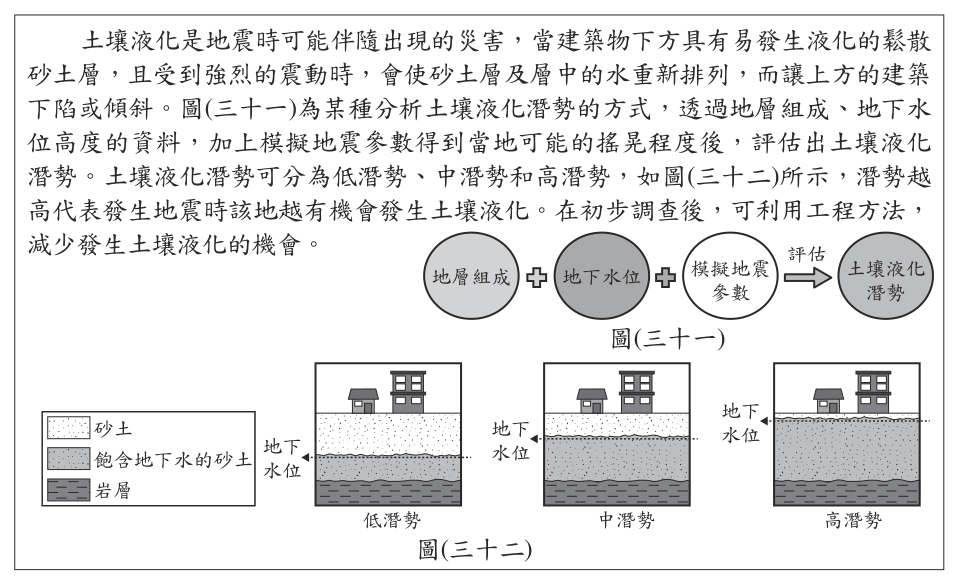
- （A）所有小白菜皆不浸泡農藥
- （B）所有小白菜浸泡相同濃度的同一種農藥
- （C）小白菜分別浸泡相同濃度的不同種農藥
- （D）小白菜分別浸泡不同濃度的同一種農藥
答案：（B）
詳解與考點
正解：題幹的「前處理」是為了公平比較不同洗滌方式去除農藥的效果，因此各組小白菜原先的農藥種類與濃度必須相同，只讓洗滌方式成為變因。B 使所有小白菜浸泡相同濃度的同一種農藥，能排除農藥差異的干擾，故為正解。
A：所有小白菜皆未浸泡農藥，便沒有農藥可比較其去除效果，錯誤。
C：不同種農藥的性質與洗去難易可能不同，會多出農藥種類這個變因，錯誤。
D：不同濃度的農藥會影響殘留量與洗滌效果，無法公平比較；它看起來對，是因為都使用同一種農藥，但濃度仍須控制一致，錯誤。
本題考點：實驗設計的控制變因——比較不同洗滌方式時，農藥種類與濃度都要相同；公平比較判準——只改變欲研究的洗滌方式，其餘會影響結果的條件須一致。
第 49 題
根據本文，圖(三十一)中模擬地震參數所得到的結果，與下列何種資料所呈現的特性最直接相關？
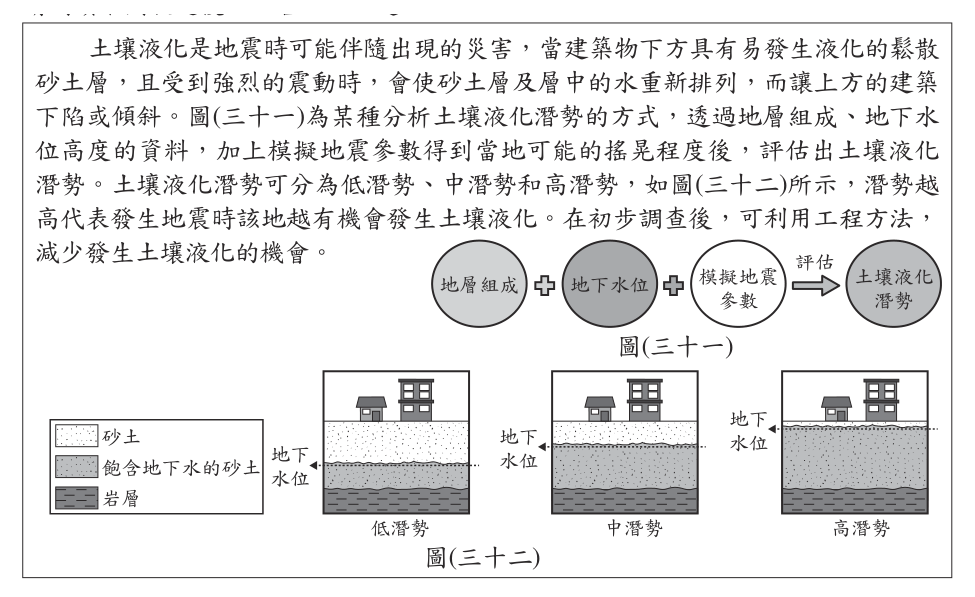
- （A）地震強度
- （B）地震規模
- （C）地震的位置
- （D）斷層的類型
答案：（A）
詳解與考點
正解：題幹所稱模擬結果是某地受到地震影響的程度，關鍵在於同一地震於不同地點的搖晃大小不同；這最直接對應地震強度（震度），故 A 為正解。
B：地震規模表示整起地震釋放能量的大小，是單一數值，不會隨觀測地點改變。
C：地震的位置是地震發生的所在地，不是各地實際搖晃程度的表示。
D：斷層類型是地震成因的構造特徵，不能直接表示某地受到的搖晃程度。
本題考點：震度與規模——震度表示各地實際搖晃程度，會受距離與地質影響；規模表示地震釋放能量，對同一地震為單一數值。
第 50 題
根據本文，當模擬的地震參數固定時，可利用圖(三十二)來說明下列何者？
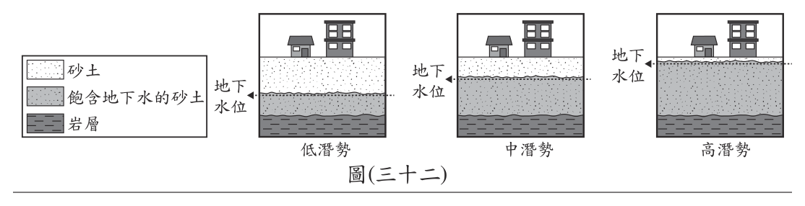
- （A）當岩層越厚時，可能會有較高的土壤液化潛勢
- （B）當砂土層越厚時，可能會有較高的土壤液化潛勢
- （C）當地下水位越高時，可能會有較高的土壤液化潛勢
- （D）當地層組成以砂土為主時，可能會有較高的土壤液化潛勢
答案：（C）
詳解與考點
正解：題幹限定地震參數固定，圖中要比較的是地下水位；砂土孔隙被水飽和時，地震振動易使孔隙水壓上升、土壤喪失承載力。地下水位越高，飽和砂土範圍越大，液化潛勢越高，故 C 為正解。
A：岩層是堅硬岩石，本身不是容易液化的砂土，不能由岩層厚度推得液化潛勢較高，錯誤。
B：砂土層厚度不是本圖固定地震參數下所凸顯的變因；砂土若缺乏足夠地下水，仍不易液化，錯誤。
D：地層以砂土為主雖是液化的條件之一，但若未飽和仍難液化，不能取代地下水位的判斷，錯誤。
本題考點：土壤液化條件——砂土、地下水飽和與地震振動缺一不可；圖表判讀——題目已固定地震參數時，應找出圖中改變的條件，地下水位愈高則液化潛勢愈高。
其他年度
回到國中教育會考自然的年度總覽，
或到國中教育會考題庫首頁看其他科目。
題目與標準答案出自心測中心 會考歷屆試題（依著作權法 §9，考試試題不受著作權保護）。依中華民國《著作權法》第 9 條第 1 項第 5 款，
依法令舉行之各類考試試題不得為著作權之標的，得自由利用。詳解為 AI 整理的學習輔助，
並非官方標準答案；中華民國會修訂，引用前請對照現行版本查證。